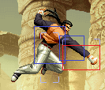
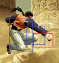

ロバート：低JC・高JCの判定と、作品ごとの判定の傾向
KOF2000のロバートの低JCと高JCの判定画像です（2015/9/24の投稿、左が低JC、右が高JC）。低JCは、判定を見る限り飛び道具をかわすときにも使えそうです。


KOF2000の判定の傾向
KOF2000までは、攻撃判定が食らい判定より前に出ているのが基本です。そのため、KOF2000をベースにしたキャラ（香澄や裏ロバート）は判定が強くなります。KOF2001からは、攻撃判定が食らい判定に覆われるのが基本になりました。KOF2001に登場していたキングは判定が強くありません（2016年、「多分合ってる」とのこと）。
なお、このロバートのJCの判定は、KOF2000の中では特別強くはないはずで、KOF2001でも同じです。
補足：変わった時期の説明が2つある
判定の傾向が変わった時期について、2つの説明があります。
| 時期 | 説明 |
|---|---|
| 2015/9/24 | KOF2001→2002の調整で、全体的に食らい判定が大きくなって攻撃判定を覆うのが普通になった |
| 2016/1/13 | KOF2001で攻撃判定が食らい判定に覆われるのが基本になった（2000→2001） |
どちらが正しいか、あるいは2段階で変わったのかは整理されていません。詳しくはKOF2001の判定の変化にあります。

気になること
- 判定の傾向が変わったのは2001か、2002か（2015年と2016年で説明が違う）。